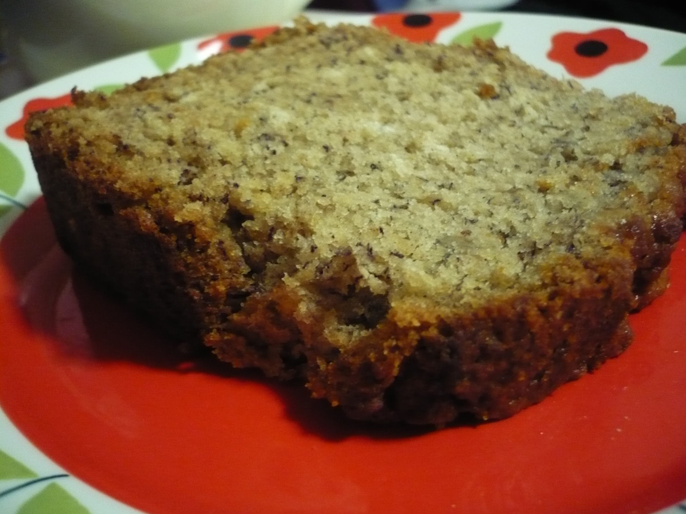

<< Home
Nanner Bread

The ingredients:
Dry
- Flour
- Baking soda
- Cinnamon and allspice powder
- Salt
Wet
- Overripe Bananas
- Sour Cream
- Butter
- eggs
- Vanilla
- Oil
- Brown Sugar
What to do to actually make
- Line pan with parchment
- Whisk the dry shit
- mash the nanners in a seperate bowl
- whisk the wet shit in a separate bowl
- combine all of them with a rubber spatula, don't overmix
- fill the pan
- bake at 350 F or 180 evil
- 70 minutes or until a toothpick comes out clean after poking
- Cool for 10 minutes
- Lift out and then place on a wire rack
- Wait an hour or so, then dig in with unwashed hands!